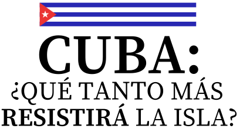

Cuba: ¿Qué tanto más resistirá la isla?
Elaboración propia con datos de la ONEI, Gobierno de Cuba, EIA, OPS/OMS, Casa Blanca, Departamento de Estado de EE. UU., Reuters, Associated Press (AP) y EFE. Información consultada entre enero y agosto de 2026. Imágenes de archivo.

Cuba atraviesa la crisis más prolongada desde los años noventa. La diferencia es que ahora la presión económica interna coincide con una ofensiva de Estados Unidos mucho más agresiva: bloqueo petrolero, sanciones ampliadas y la amenaza de una acción militar sobre la mesa.
La isla está cerca de alcanzar un declive económico y social,
pero ¿qué tan cerca está el sistema político de caer?